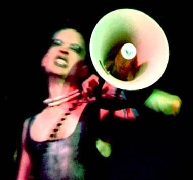

| 25. April 2003 |
Köpenhamns homo-avantgarde tar över i Bøssehuset

KÖPENHAMN Bøssehuset i Christiania har fått nytt liv. Föreningen Dunst som de senaste två åren gjort sig kända som stans nya homo-avantgarde har flyttat in och firar med en stor fest den 26 april.
En helt ny underground-miljö bestående av homon, freakade
transpersoner och fjollor (fisseletter) har under de senaste åren
etablerat sig i stadsdelen Vesterbro i København. De kallar sig
Dunst och har på rekordtid blivit landets absoluta homo-avantgarde.
Nu flyttar Dunst in i Bøssehuset och övertar därmed rollen
som Danmarks homosexuella frontlöpare.
Drömmen är att få en bättre bas för Dunst, större
utrymme för aktiviteter och samtidigt att åter ge Bøssehuset
sina forna tiders glans.
Dunst är redan klara med att ha filmaftnar på Bøssehuset
varje onsdag klockan 20.00 och ett gratis Internet-café för
alla medlemmar i föreningen. Och så står Dunst den 26
april bakom vårens med färgrika fest, "Primate Night",
med djungelkrig, håriga kroppar och skäggiga kvinnor fördelade
på två våningar i Ungdomshuset på Jagtvejen. Där
kommer en radda DJ?s spela, en chillout lounge fixas liksom shower och
överraskningar under nattens gång (entré 60 danska kronor).
- Vi kommer inte att invadera Bøssehuset och gör om det helt.
Men det blir ändå inte helt detsamma som förr. Vi är
nya människor med nya idéer. Och vi har även flator med
oss. Det innebär en bättre köns- och sexualpolitik. Men
ta det bara lugnt - vårt folk är trash.
Det berättar Dennis Agerblad som är en av huvudkrafterna bakom
Dunst och känd för sina uppträdanden vid bland annat Frøken
Verden, Copenhagen Gay & Lesbian Film Festival och ljudinstallationen
"Fuck Around" i H C Ørstedtparken.
Bland de andra Dunst-kändisarna märks de bedagade stjärnorna
Ramona Macho, Miss Fish, Puta, Guxina Blasfemica, Johnny Warehouse, Miss
O.T.B., Jean von Baden, Knud Vesterskov, Aino och Hairwerk vs Holestream.
Dunst står i övrigt för det opolerade och håller
sig på jorden - kanske långt ner under jorden - och även
långt där uppe där man aldrig får något fotfäste.
- Det normala äcklar oss så därför är en av
våra många slogans: "Om du känner dig som ett freak,
som kom med i Dunst och känn dig normal", berättar Dennis
Agerblad som också påpekar att bøsser ofta kallats
för prutt - alltså en äcklig doft.
- Vi valde att använda ordet dunst eftersom det också kan stå
för dunster av lite för mycket parfym, säger han.
Det kommer inte att bli så att Dunst tar över exakt där
Bøssehuset lämnade. För inget kan nånsin skapa
bättre Bøssehus än det Bøssehuset var på
sina glansdagar med bögteater och samtida bögkultur på
högsta nivå. Men eftersom det vartenda år kommer ut nya
transande rännstens-fjollor eller något intill förväxling
likt sådana, så kommer det alltid att finnas plats för
ett ställe som Dunst. Ett ställe där finmotorik för
påklistring av lösögonfransar fortfarande ses som ett
fack av den gamla mästarskolan.
Dennis Agerblad understryker att Dunst i övrigt handlar om vänskap
utan att man nödvändigtvis måste få ett ligg - "även
om det sjävklart även blir knulleri av i dunst".
Utåt är det ännu så länge mest performance-gruppen
som syns, men Dunst består även av transpersoner som gör
musik, målar, designar eller producerar film. Och även om Dunst
nu flyttar in i Bøssehuset så kommer de fortsatt att göra
hela stan till sin egen scen och inta nya bakgårdar, lekplatser
och parker ? allt efter behov.
För att ha råd med att driva såväl Internet, filmaftnar
som alla andra aktiviteter, så kostar det 50 kronor om året
att vara medlem i Dunst.
- Men så ingår ju även kaffe, stearinljus och sånt,
upplyser Dennis Agerblad.
Bøssehusets traditionella måndagsmöten - som är
husets beslutande organ - fortsätter i övrigt som alltid klockan
20.00 - numera utökat med alla Dunst-aktivister.
Och så kommer Bøssehuset självklart att driva en nödvändig
och provocerande Christianiapolitik tillsammans med "Christianias
Pigegade" och så blir det så klart fortsättningsvis
line-dance i huset på torsdagarna.
Vill du veta mer om Dunst så besök länkarna nedan:
Christianias hemsida
Dennis Agerblad
Johnny Warehouse
Miss Fish
Pan Bladet
Källa: dunst
Jens-Jørgen Madsen
25/4 2003, 11.49
Reference:
www.qx.se/nyheter/artikel.php?artikelid=2418
Print denne side